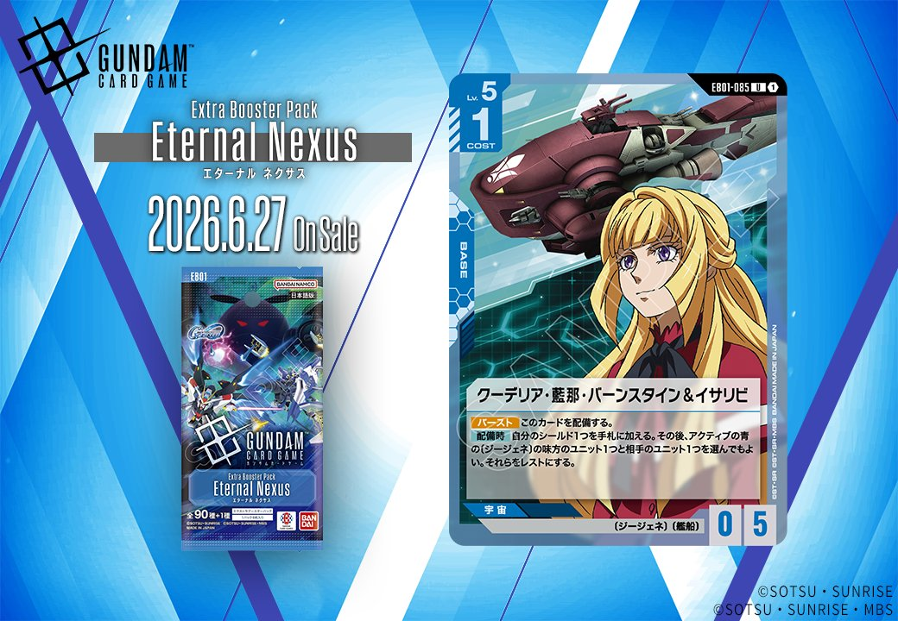
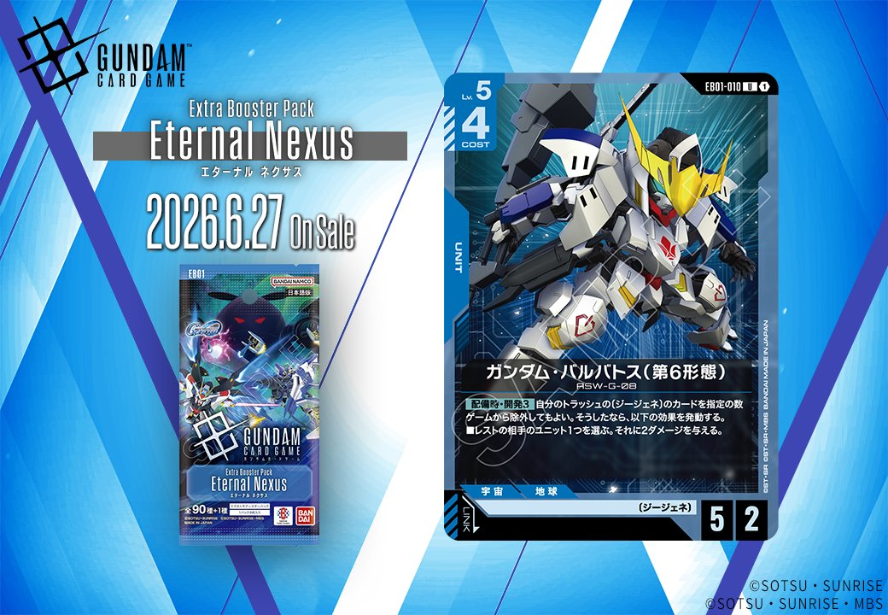

2026年6月27日発売の拡張パック「Eternal Nexus(エターナル ネクサス)」から、青色のBASEカード「クーデリア・藍那・バーンスタイン&イサリビ」と青色のUNITカード「ガンダム・バルバトス (第6形態)」の2枚が収録されます。青色の新たなBASEとUNITの組み合わせがどのような戦術を生み出すのか、その詳細を見ていきましょう。

クーデリア・藍那・バーンスタイン&イサリビ (EB01-085)
| 色 | 青 | タイプ | BASE |
| Lv | 5 | コスト | 1 |
| AP | 0 | HP | 5 |
| 特徴 | 〔ジージェネ〕、〔艦船〕 | ||
効果: 【バースト】このカードを配備する。【配備時】自分のシールド1つを手札に加える。その後、アクティブの青の〔ジージェネ〕の味方のユニット1つと相手のユニット1つを選んでもよい。それらをレストにする。
クーデリア・藍那・バーンスタイン&イサリビは、青の艦船BASEとして標準的なシールド回収に加え、アクティブの青のジージェネユニットと相手ユニット1体ずつをレストにできる効果を持つ。既存の艦船BASEと比較すると、ネェル・アーガマやジュピトリスが相手ユニットのみをレストにするのに対し、味方もレストにする代わりに条件が緩く（HP制限やLv制限なし）設定されている。味方ユニットをレストにするデメリットはあるが、相手の主力ユニットを無条件でレストできる点は防御面で優秀だ。

ガンダム・バルバトス (第6形態) (EB01-010)
| 色 | 青 | タイプ | UNIT |
| Lv | 5 | コスト | 4 |
| AP | 5 | HP | 2 |
| 特徴 | 〔ジージェネ〕 | ||
効果: 【配備時・開発3】自分のトラッシュの〔ジージェネ〕のカードを指定の数ゲームから除外してもよい。そうしたなら、以下の効果を発動する。■レストの相手のユニット1つを選ぶ。それに2ダメージを与える。
ガンダム・バルバトス (第6形態)は、コスト4/AP5/HP2と高APながら低HPの青色ユニット。開発3で最大3枚の〔ジージェネ〕をゲームから除外することで、レスト状態の相手ユニットに2ダメージを与える配備時効果を持つ。 同日公開のキシリア・ザビ & グワジンは〔ジージェネ〕のリンク時にリペア2を付与するため、このカードがリンクすればHP2の脆さをカバーできる相性の良さがある。トラッシュの〔ジージェネ〕を消費する点は注意が必要だが、相手の疲弊したユニットを確実に除去できる点は魅力的。


関連カード
-
 ホワイトベース(ST01-015)青系デッキ内採用率12.2% (387デッキ)
ホワイトベース(ST01-015)青系デッキ内採用率12.2% (387デッキ) -
 リーンホースJr.(GD04-121)青系デッキ内採用率2.4% (75デッキ)
リーンホースJr.(GD04-121)青系デッキ内採用率2.4% (75デッキ) -
 ネェル・アーガマ(GD01-123)青系デッキ内採用率1.3% (42デッキ)
ネェル・アーガマ(GD01-123)青系デッキ内採用率1.3% (42デッキ) -
 ジュピトリス(GD03-123)青系デッキ内採用率0.2% (5デッキ)
ジュピトリス(GD03-123)青系デッキ内採用率0.2% (5デッキ) -
 キシリア・ザビ & グワジン(EB01-086)NEW青系 — 同色・共通特徴: ジージェネ、艦船（新カード）
キシリア・ザビ & グワジン(EB01-086)NEW青系 — 同色・共通特徴: ジージェネ、艦船（新カード） -
 ガンダムデルタカイ(EB01-008)NEW青系 — 同色・共通特徴: ジージェネ（新カード）
ガンダムデルタカイ(EB01-008)NEW青系 — 同色・共通特徴: ジージェネ（新カード） -
クーデリア・藍那・バーンスタイン&イサリビ(EB01-085)NEW青系 — 同色・共通特徴: ジージェネ（新カード）